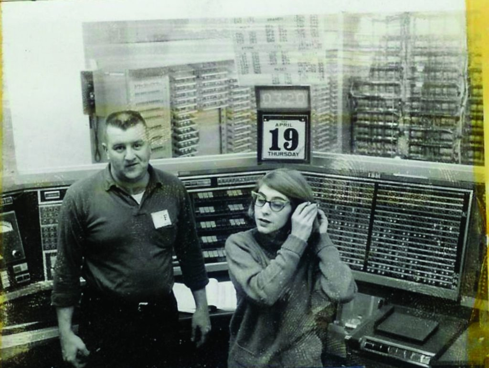

Margaret em atividade
Margaret Hamilton
Momentos marcantes de Margaret Hamilton e sua trajetória lendária.
Margaret em atividade

Conhecendo a cabine

Margaret na NASA
Engenharia de Software
Margaret e Lauren
Medalha da Liberdade
Margaret Hamilton
Margaret Heafield Hamilton é uma cientista e engenheira norte-americana de grande importância para a história da astronáutica.
Ela trabalhou na NASA no projeto Apollo 11, desenvolvendo o software que ajudou a tornar possível a chegada do homem à Lua pela primeira vez.
Além disso, contribuiu em diversos outros projetos importantes e publicou mais de cem artigos sobre suas pesquisas.
Em uma época na qual o termo “engenharia de software” ainda não existia, ela foi a primeira a se referir dessa forma ao trabalho que realizava.
Em 2016, recebeu a Medalha Presidencial da Liberdade como homenagem ao seu trabalho na NASA.
O Apollo 11 foi a missão espacial que levou os primeiros seres humanos à Lua.
O projeto entrou para a história da exploração espacial e ficou marcado pelo trabalho técnico e cuidadoso de equipes como a de Margaret Hamilton.
O software desenvolvido por ela foi essencial para lidar com os problemas que surgiram durante a fase final da missão.

Uma visão resumida da trajetória de Margaret Hamilton.
Nasce em Paoli, Indiana, nos Estados Unidos.
Forma-se em Matemática pelo Earlham College.
Passa a trabalhar no MIT desenvolvendo programas meteorológicos.
Seu software ajuda a missão Apollo 11 durante a alunissagem.
Recebe a Medalha Presidencial da Liberdade.
A filha pequena de Margaret costumava ir com ela ao trabalho e brincar com o sistema. Isso fez Margaret perceber que erros humanos podiam acontecer facilmente, o que a levou a criar programas mais seguros e confiáveis.
Todo o software era inicialmente escrito em folhas de papel, linha por linha. Só depois esse código era passado para o computador e utilizado nas missões, como a Apollo 11 Moon Landing.
Por muito tempo, o trabalho de Margaret ficou "invisível", com a maior parte do mérito indo para os astronautas. Só anos depois ela recebeu prêmios importantes, como a Medalha Presidencial da Liberdade.